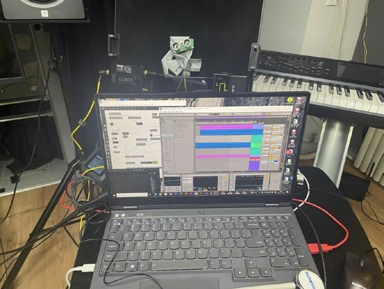
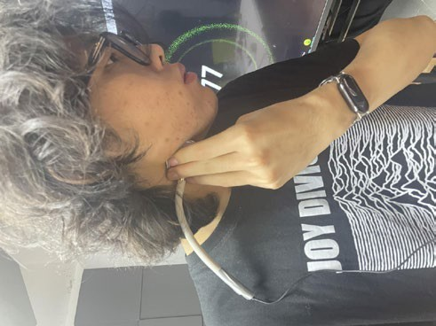
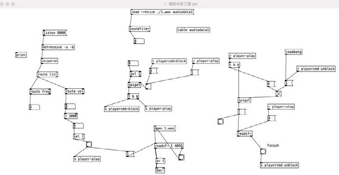
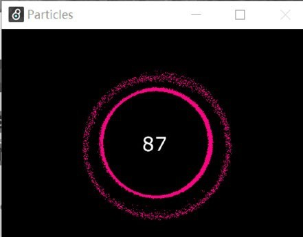

Generative music · Interactive installation
Immersive by Your Own Music
Listen inward. Let your own rhythm become music.

The idea
Inspired by focused meditation, this installation invites participants to listen to their heartbeat and breathing. Microphone input is analyzed in real time, and the resulting BPM and beat triggers shape the musical experience. The project explores attention and self-awareness through listening.
A three-stage musical journey
The first stage makes the relationship audible: dry breath and heartbeat gradually become musical. In the second stage, low-frequency instruments and electric piano add depth as coordinated rhythms continue. The reward stage introduces higher-frequency and reversed sounds to create a clear change in texture.


Responsive, rather than repetitive
Transitions are reversible. The relationship between breathing and heartbeat controls the progression, while beat-triggered timbre variation keeps the music moving. Short and sustained sounds respond across frequency ranges within a shared harmonic framework.


A connected audio and visual system
Python calculates BPM and beat triggers from sampled sound. Pure Data and DAW-based music processing support the audio system; Max receives BPM data for visual feedback. Proximity sensing and voice guidance introduce the participant to the installation.


See & hear